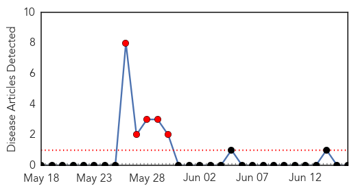
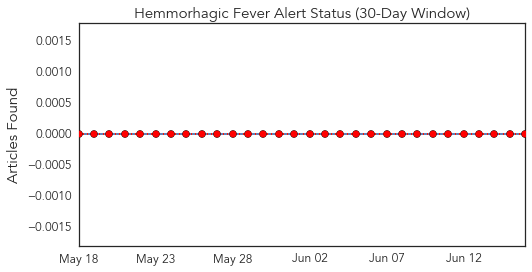
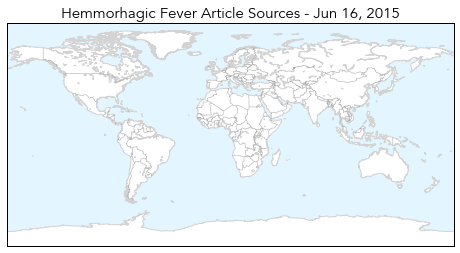
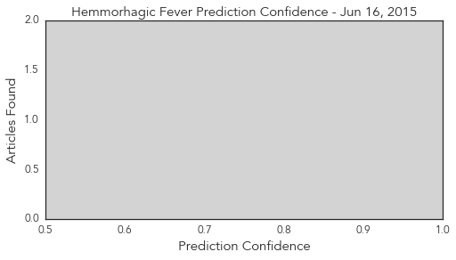
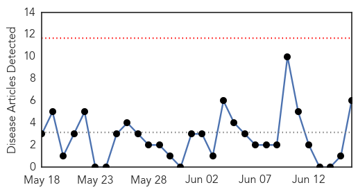
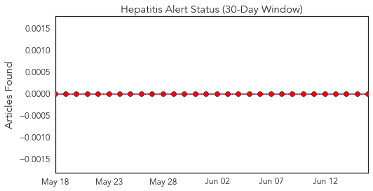
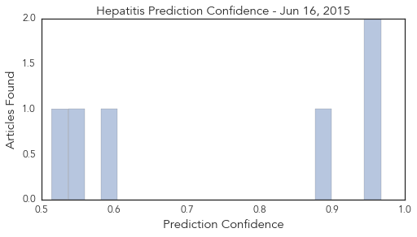

Hemmorhagic Fever
30-Day Web Trend
5 alerts, 0 warnings

30-Day Twitter Trend
0 alerts, 0 warnings

Article Locations
Article Confidences
Top Articles:
-
No articles found for Jun 16, 2015
Top Tweets:
-
No tweets found for Jun 16, 2015
Hepatitis
30-Day Web Trend
0 alerts, 0 warnings

30-Day Twitter Trend
0 alerts, 0 warnings

Article Locations

Article Confidences
Top Articles:
- 0.967
- Experts: Risk of hepatitis E outbreak 'very high' in earthquake-ravaged Nepal
- 0.956
- Risk of Hepatitis E Outbreak in Earthquake-Ravaged Nepal is Significant, Experts Say
- 0.895
- HEV risk prevalent in Nepal; experts call for protective measures
- 0.600
- Hepatitis responsible for 93% of prison disease
- 0.553
- State prisoners sue for access to hepatitis C drugs
- 0.514
- Theranos Preventative Lab Testing Allows Patients to Take Their Health In Their Own Hands
Top Tweets:
-
No tweets found for Jun 16, 2015